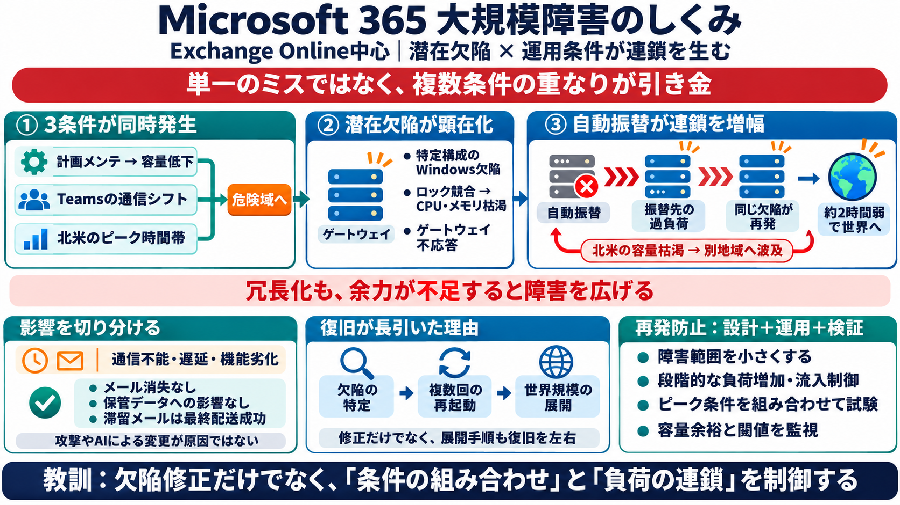

The Great Exchange Online Outage of November 2026
Incident timings for EX1550543. Figure 1: Incident timings for EX1550543 MO1550821 is the other incident. This is a ca…

Microsoft 365（主に Exchange Online）で、大規模障害が発生した事例を「組み合わせ」で読み解きます。
ゲートウェイ障害は、依存関係と自動再分配によって“局所→広域”へ波及し得ます。
latent defect は「普段は表に出ない」が、特定の構成と負荷が揃うと突然“性能限界”側に寄ります。
ゲートウェイの一部が不応答になると、トラフィック管理が同一地域の健全な capacity unit へ自動振替します。
欠陥の露呈には、計画メンテによる容量低下・Teamsトラフィックのシフト・北米ピーク時間帯が同時に重なったと説明されています。
振り替え先の過負荷で同種欠陥が再発し、地域枠の容量が尽きるとさらに別地域へ分散して影響が世界に波及しました。
レポートは「メールの紛失なし」「キュー滞留は最終配送成功」「at rest の保管データは影響なし」と明記しています。
サイバー攻撃由来ではなく、AIツールによる変更でもないと確認されたとされています。
欠陥特定に時間がかかり、修正適用前後でサーバ再起動が複数回必要だったこと、影響サーバへの世界展開が要因とされています。
次のステップは、障害範囲（blast radius）を小さくし、段階的ランプアップと admission control で危険域を超えないようにする方針です。
原因を単一要因ではなく「潜在欠陥＋運用条件の組み合わせ」で整理できている点が強みです。
本レポートの内容は、Microsoft 365のインシデントIDや外部まとめの記述により裏付けられるとされています。
Incident timings for EX1550543. Figure 1: Incident timings for EX1550543 MO1550821 is the other incident. This is a ca…
A latent defect in a Windows fix made for Microsoft 365 networking gateway servers, according to Microsoft's preliminary…
They are Microsoft's incident IDs. EX1550543 is the Exchange Online incident covering mailbox access. MO1550821 is the w…
when the issue will resolve? Outlook | Windows | Classic Outlook for Windows | For business Outlook | Windows | Class…
# Microsoft 365 Status on X: "We're investigating reports of users experiencing issues accessing Exchange Online mailbox…